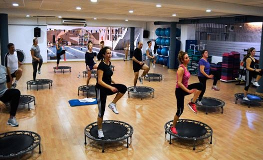
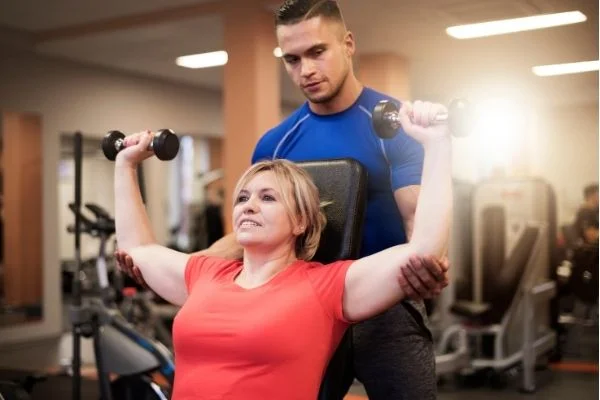
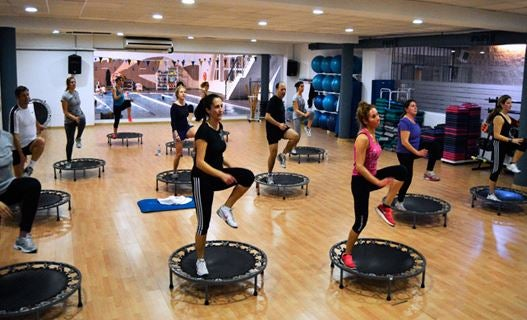
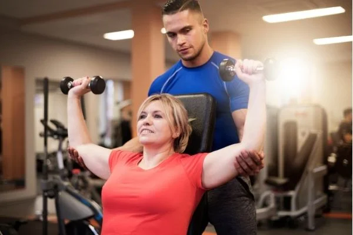

Gimnasio OLYMPUS Aranda
Nuestros servicios
Ofrecemos un gran número de servicios:
 



- Body Combat: Una combinación entre los deportes de contacto y las artes marciales.
- Body Pump: Trabaja todo tu cuerpo con pesas.
- Body Balance: Mejora tu equilibrio y relaja tu cuerpo y mente.
- Spinning: Pedalea durante 1 hora en una bicicleta estática especial y ritmos guiados por el monitor.
- Yoga: Mejora tu estabilidad, flexibilidad y fuerza corporal mientras te relajas moviendo el cuerpo.
- XCore: Fortalece tus abdominales con ejercicios muy variados.
- Zumba: Mueve tu cuerpo al ritmo de la música y descarga tensiones de manera natural.
- Aquaerobic: Muevete bajo el agua reduciendo los movimientos bruscos y libérate.
- Crossfit: Resistencia, fuerza física, flexibilidad, potencia, equilibrio… Todo en uno.
- Pilates: Reeduca tu postura y mejora tu concentración.
- Dietas personalizadas a cada cliente.
- Masajes.
- Y mucho más...